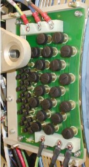
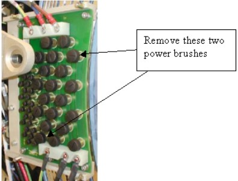
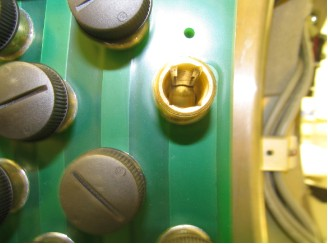

Proprietary to General Electric
Direction 5193755-800, Rev# 8
Proprietary to General Electric |
| Follow all required safety and PPE procedures customary for your organization when working on this product. | |
| Condition | Reference | Eff |
|---|---|---|
Only trained service personnel should service the GE CT Scanner. | - | - |
On the CSD, select Diagnostics > RTS Viewer. See Illustration 1.
From the dropdown list in the SubSystem field select ORP Low Speed.
From the dropdown list in the Report Type field select Num of Exams.
In the field to the right of Report Type enter 30.
From the drop-down list in the Display Type field select Cumulative. A report appears similar to that in Illustration 1.
Ensure that the value in the MAX column is <=1 disconnect per exam for short, medium, and long disconnects.
If the MAX value is >1, perform the service procedures in Section 4.2 - Section 4.5 of this document.
On the CSD, select Diagnostics > RTS Viewer. See Illustration 2.
From the dropdown list in the SubSystem field select TGP Low Speed.
From the dropdown list in the Report Type field select Num of Exams.
In the field to the right of Report Type enter 30.
From the dropdown list in the Display Type field select Cumulative. A report appears similar to that in Illustration 2.
Ensure that the value in the MAX column is <= 1 disconnect per exam for short, medium, and long disconnects.
If the MAX value is >1, perform the service procedures in Section 4.2 - Section 4.5 of this document.
Move table to its lowest elevation.
Remove gantry covers as required. Refer to the Service Methods manual: Parts Replacement > Gantry > Enclosure > (Cover Removal Procedure).
| Always turn OFF the HVDC before the 120 VAC. Turning OFF 120 VAC power before HVDC power can result in equipment damage. | |
Turn OFF all three service switches (Axial Drive, HVDC, 120 VAC) on the Service Switch Panel.
| ELECTROCUTION HAZARD | |
| HIGH VOLTAGE PRESENT | |
| USE PROPER LOCKOUT/TAGOUT PROCEDURES BEFORE REPLACING COMPONENTS. SEE SAFETY MENU OF SERVICE DOCUMENT GUI FOR APPROPRIATE PROCEDURES. |
Perform a LOTO for system power (A1 disconnect) prior to replacing this component.
Remove the rear gantry cover support bracket.
Remove the slipring covers.
Disconnect all connections to the brush block ( Illustration 4)
Illustration 4: Slipring Brush Block Assembly

Remove the four 6 mm cap screws that secure the brush block assembly to the gantry.
Carefully remove the brush block.
Follow this procedure to properly perform a slipring cleaning.
| Use of Neoprene or nitrile gloves to limit irritation and ingestion of metallic dusts is recommended. Do not remove gloves near an exposed slipring. The powder inside the glove can contaminate the ring. | |
Clean off the dust from the slipring tracks and carefully around the block with a HEPA vacuum cleaner and the soft brush attachment.
| The soft brush attachment that comes with the HEPA vacuum cleaner should not be used for anything other than slipring brush debris cleaning. The brush must be kept clean to avoid contamination of the slipring and brush tips. It is recommended to store the brushes or brush block in a separate closed bag (such as a plastic Zip-lock bag). | |
With the slipring eraser ( Illustration 5), carefully rub the tracks, using a large, sweeping motion.
Illustration 5: Slipring Eraser

Clean the track again with the HEPA vacuum cleaner and the soft brush attachment.
Wipe the track with a soft white linen cloth, while using the vacuum cleaner to remove any other debris.
Remove gloves and wash hands thoroughly after cleaning the slipring.
| Brush contamination is possible. Do not touch brushes or rings with your fingers. Skin oils contaminate the brushes and rings, reduce usable life, and potentially create future failures. | |
Remove all individual signal brushes from the block by unscrewing the brush cap and extracting the brushes.
| NOTE: | Brushes are spring loaded to ensure constant contact with the slipring during operation. When the block is removed, the springs relax, causing the brushes to bound outwards. |
Install new signal brushes on the block.
Carefully install the brush block by exerting even pressure perpendicular to the ring surface.
Secure the brush block with the four 6 mm cap screws. Do not tighten the cap screws.
Carefully push the brush block against the position adjustment set screws in the mounting bracket.
Remove the two brushes from the inside HVDC ring top and bottom ( Illustration 7). Remember their orientation for later installation.
Illustration 7: Power Brushes to Use for Alignment

Use a flashlight to verify that block position is adjusted so the brushes ride in the center of their tracks ( Illustration 8).
Illustration 8: Correct Brush Block Alignment

| NOTE: | Incorrect alignment occurs if either side of the track
is visible (
Illustration 9). If necessary, adjust the brush block setscrews to center the
brush. To measure radial and axial runout, see the Slipring Platter Replacement procedure, Section 4.2, Step 15 - Step 18. Illustration 9: Incorrect Brush Block Alignment
|
Torque the four 6 mm cap screws to 7.9 N-m.
Do the following before reassembling the gantry:
Check all power connections to the slipring – 208 V on the back side of the ring.
Check the brush block connections, then visually inspect the harness with the Sub-D connector.
Check the small slipring i/f board on the rotating part of the ring.
Verify that the 9-pin connector is securely connected to the board.
Use a 2.5 mm hex key to verify that all five 3 mm cap screws are tight.
Reassemble the gantry.
Document the number of gantry revolutions.
Perform a hardware reset using console gantry reset (Hardwire).
Acquire 10 scouts (120 kV/40 mA., 1000 mm table movement).
Acquire 100 axials (120 kV/80 mA., 0.5 sec. scan).
Acquire 1 helical (120 kV/40 mA., 30 sec.scan).
Acquire 10 axials (120 kV/400 mA., 4 sec.scan).
Verify that there is no increase in LSCOM errors.